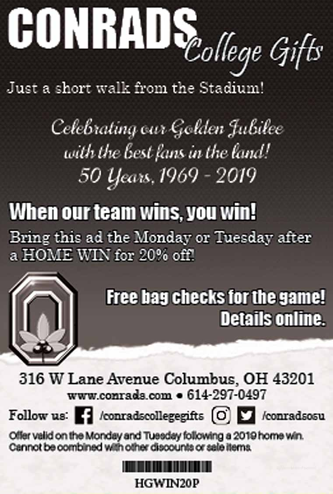

Small Business
Conrads College Gifts
The bulk of design work for Conrads College Gifts was performed in Photoshop. Some of our ads were made on existing templates, made before my tenure. However, I enjoyed working from InDesign when given the chance. Group projects were usually performed in Photoshop
-

August 2016 Buckeye Sports Bulletin Ad - Photoshop, From Template -

Football Program Ad, Full Page Color - InDesign, April 2019 (Original Intention) -

Football Program Ad, Quarter Page Black and White - InDesign, April 2019 (Printed) -

Front of Conrads Product Flyer for September and October 2018 - Photoshop, August 2018 -

Back of Conrads Product Flyer for September and October 2018 - Photoshop, August 2018 -

Conrads Product Flyer for September and October 2018 - Photoshop, August 2018 -

Exterior of Conrads Christmas Flyer - InDesign, November 2017 -

Interior of Conrads Christmas Flyer - InDesign, November 2017 -

Conrads Christmas Flyer - InDesign, November 2017
Flairsoft
This was a one week rush project with a local application firm. The flyers were meant for a convention that weekend. I worked with an associate of the company to implement an original flyer design. I was provided copy and images. I completed the project in time for it to be printed.
-

FastTrack Product Flyer -

GeoTrack Product Flyer -
MobileTrack Product Flyer
Filingo's Wine Jelly 2.0
a-ka-neArt (Personal)
Classwork
Intro to Visual Communication Design Studio (VCD 13001)
Problem 1: Point, Line and Plane - Re-Imagined
Working best from my memory, I set out to remake a project from my time at Kent State University. The project was to take a grayscale image and do the following:
- High contrast (1)
- Contour (1)
- Point (4)
- Line (4)
- Plane (4)
- Combinations (5)
The original project involved creating a booklet out of the final approved interpretations, as well as one enlarged combination. It was to be presented on bristol with a clean black paper cover.
Recalling the numerous sleepless nights and double sinus infection, I took advantage of my digital tools. This did an amazing job in expediting the process. In turn, I feel this helped me focus more on the design work instead of just trying to get something done.
The image used: 'clock' from ~Pawsitive~Candie_N under CC Attribute & Share Alike
-

The original clock Photo -

High Contrast Clock -

Contour or Outline -

Point 1 -

Point 2 -

Point 3 -

Point 4 -

Combined Point -

The original clock Photo -

Line 2 -

Line 3 -

Line 4 -

Combined Line -

Line 1 and 4 -

Plane 1 -

Plane 2 -

Plane 3 -

The original clock Photo -

Combined Plane -

Plane 2 and 3 -

Combination 1 -

Combination 2 -

Combination 3 -

Combination 4 -

Final Composition